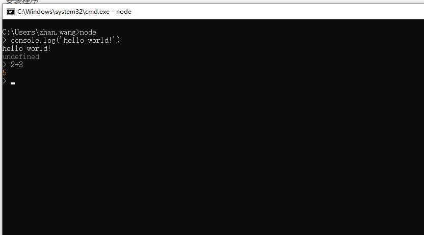
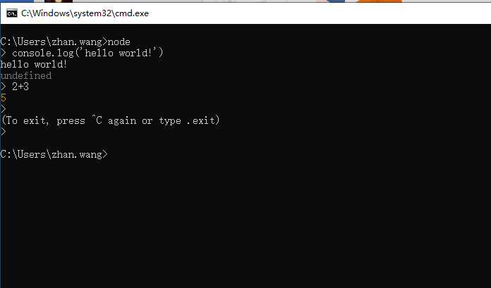

简单的安装方式是直接官网下载，然后本地安装即可。官网地址：nodejs.org
Windows系统下，选择和系统版本匹配的.msi后缀的安装文件。Mac OS X系统下，选择.pkg后缀的安装文件。
打开终端，键入命令node，如果进入命令行式js交互环境，即安装成功。如图：

我们可以直接在终端node环境下输入简短的js代码，比如正则表达式。
如果要运行一大段代码的话，可以先写一个JS文件再运行。例如有以下hello.js。
function hello() {
console.log('Hello World!');
}
hello();写好后在终端下键入node hello.js运行，结果如下：
$ node hello.js
Hello World!如果需要退出node环境，可以在终端连续输入两次：Ctrl+C即可。如图：

Node.js采用的是CommonJs规范，在NodeJS中，一般将代码合理拆分到不同的JS文件中，每一个文件就是一个模块，而文件路径就是模块名。
在编写每个模块时，都有require、exports、module三个预先定义好的变量可供使用。
require函数用来在一个模块中引入另外一个模块。传入一个模块名，返回一个模块导出对象。用法：let cc = require("模块名") ，其中模块名可以用绝对路径也可以用相对路径,模块的后缀名.js可以省略。例如：
let cc1 = require('./main.js')
let cc2 = require('home/src/main.js')
let cc3 = require('./main')exports对象用来导出当前模块的公共方法或属性，别的模块通过require函数使用当前模块时得到的就是当前模块的exports对象。用法：exports.name,name为导出的对象名。例子：
exports.add = function () {
let i = 0
console.log(++i)
}
导出一个add方法供其他模块使用其实exports类似于ES6中的export的用法，用来导出一个指定名字的对象。
module.exports用来导出一个默认对象，没有指定对象名，常见于修改模块的原始导出对象。比如原本模块导出的是一个对象，我们可以通过module.exports修改为导出一个函数。如下：
module.exports = function () {
console.log('hello world！')
}其实module.exports类似于ES6中的export default的用法，用来导出一个默认的对象。
一个模块中的JS代码仅在模块第一次被使用时执行一次，并且在使用的过程中进行初始化，之后缓存起来便于后续继续使用。
通过命令行参数传递给NodeJS以启动程序的模块被称为主模块。主模块负责调度组成整个程序的其它模块完成工作。例如通过以下命令启动程序时，main.js就是主模块。
$ node main.js // 运行main.js启动程序，main.js称为主模块完整实例：
在项目中我们有个hello.js文件，里面定义了一个求和的函数
var a = 1;
function add () {
return ++a;
}
exports.add = add我们在项目的主模块 main.js中引入hello.js
var add1 = require('./hello')
var add2 = require('./hello')
console.log(add1.add())
console.log(add2.add())该程序运行的结果如下：
$ node main.js
2
3我们可以看到hello.js并没有别引入两次而初始化两次，说明模块只会在执行的过程中被初始化一次。
本仓库是自己Node.js学习过程的真实记录，以后会每天更新一些新的知识点，希望可以对想要学Node.js的同学有一些帮助，欢迎star，你们的点赞是我更新的持久动力。同时如果你觉得本仓库中的一些知识点有错误也可以issue我，方便后期我订正！
本仓库同时在博客园和掘金更新，欢迎写博客的朋友一起学习交流。
博客园
掘金
GitHub